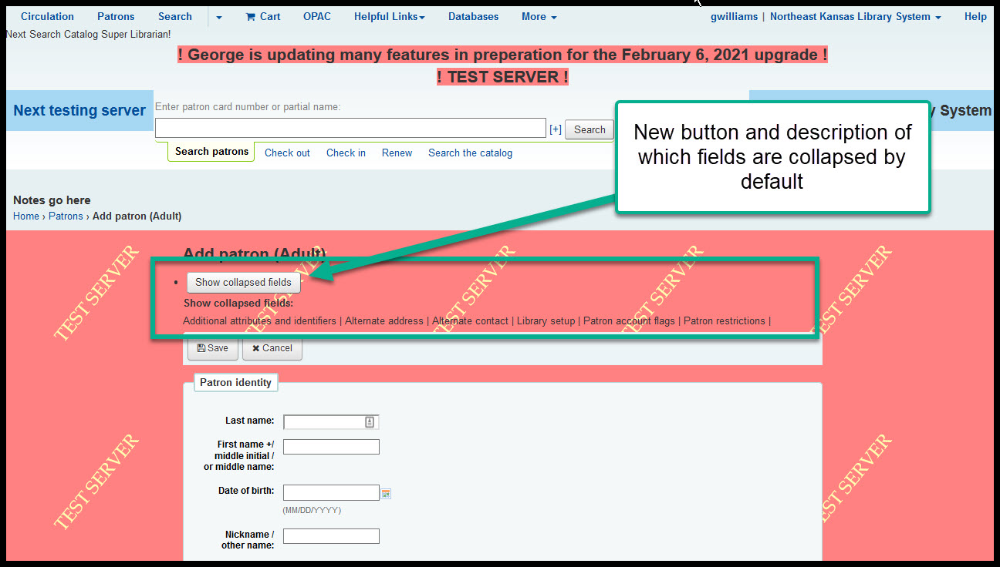
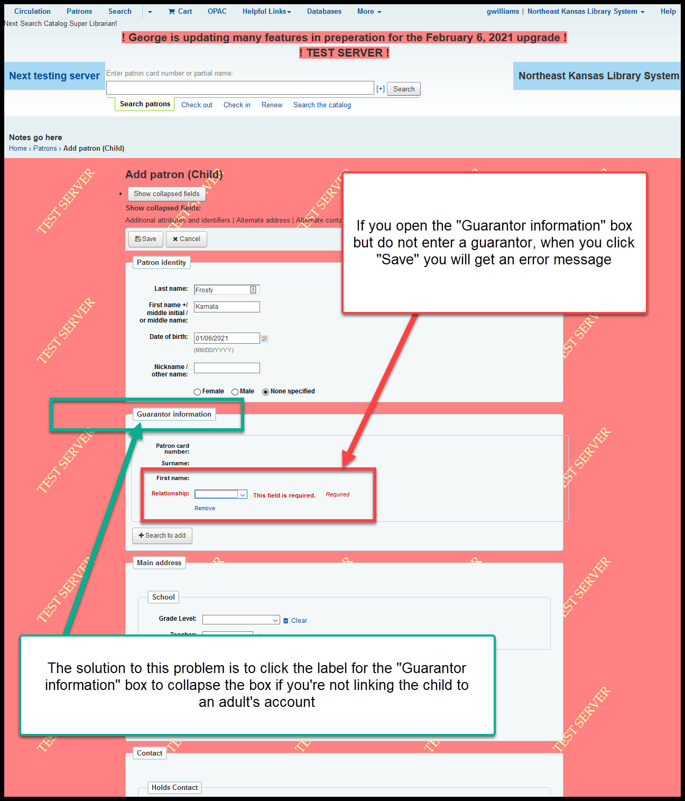

3 Circulation Changes¶
There are currently some bugs affecting the patron edit screens. We will not upgrade until these bugs are resolved.
Renew items when accruing late fees are paid¶
Currently, if a borrower has an item that is overdue, is still checked out to them, and is accruing late fees, if the borrower pays those late fees, the item is still overdue and will begin accruing new late fees on the next day unless the item is renewed. Currently after collecting money for late fees, staff have to go back to the account and go through the process of renewing the item.
After the upgrade, when a borrower pays an accruing late fee on an item that is still checked out to them, the item will automatically renew Unless the item has an unfilled request or has reached its maximum number of renewals.
There is no way to show screenshots for this feature because the scripts that generate new late fees are currently disabled on our test server.
Changes to collapsed fields on patron edit/entry¶
This is the area that the bugs are affecting.
There is a new button at the top of the page that allows you to expand all sections except “Guarantor” with one click:
The guarantor fields are acting buggy and I don’t know if the fix we are waiting for will fix this issue.
If you are creating an account for a child and you click on the “Guarantor information” label, the box will open. If you don’t add any guarantor information and try to save the account, you will get an error message that the “Relationship” field is required. The solution to this problem is to either fill in the guarantor information or to click on the “Guarantor information” label to close the box.
